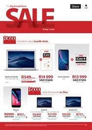
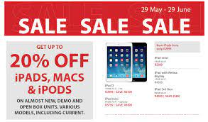

I-STORE
Apple Store is a chain of retail stores owned and operated by Apple Inc. The stores sell various Apple products, including Mac personal computers, iPhone smartphones, iPad tablet computers, Apple Watch smartwatches, Apple TV digital media players, software, and both Apple-branded and selected third-party accessories.
The first Apple Stores were originally opened as two locations in May 2001 by then-CEO Steve Jobs, after years of attempting but failing store-within-a-store concepts. Seeing a need for improved retail presentation of the company's products, he began an effort in 1997 to revamp the retail program to get an improved relationship with consumers and hired Ron Johnson in 2000. Jobs relaunched Apple's online store in 1997 and opened the first two physical stores in 2001. The media initially speculated that Apple would fail, but its stores were highly successful, by passing the sales numbers of competing for nearby stores and within three years reached US$1 billion in annual sales, becoming the fastest retailer in history to do so. Over the years, Apple has expanded the number of retail locations and its geographical coverage, with 512 stores across 25 countries worldwide as of June 24, 2021, when the new flagship store at Via del Corso in Rome opened.[2][3] Strong product sales have placed Apple among the top-tier retail stores, with sales over $16 billion globally in 2011.
- 9h00am to 16h00pm-MONDAYS
- 9h00am to 16h00pm-TUESDAYS
- 9h00am to 16h00pm-WEDNESDAYS
- 9h00am to 16h00pm-THURSDAYS
- 9h00am to 16h00pm-FRIDAYS
- 9h00am to 15:30h00pm-SATURDAYS
- 9h00am to 15h00pm-SUNDAYS
WHERE WILL YOU FIND THE STORE
You Will Find i-store In The Second Floor After The Escalators.
 